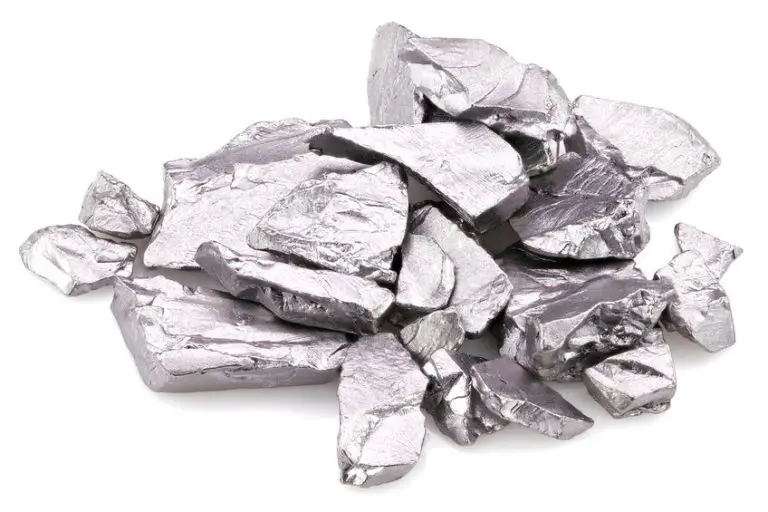

Tantalio (Ta)
- Nome elemento:
- Tantalio (Ta)
- Numero atomico:
- 73
- Massa atomica:
- 180.95 u
- Isotopi:
- 2 (Tantalio-180m e Tantalio-181)
- Temperatura di fusione:
- 3017 °C
- Temperatura di ebollizione:
- 5458 °C
- Densità:
- 16.69 g/cm³
- Elettronegatività:
- 1.5 (Scala di Pauling)
- Anno di scoperta:
- 1802 (Anders Ekeberg)
- Abbondanza:
- Molto raro, principalmente trovato nei minerali tantalite e columbite
- Caratteristiche:
- Metallo altamente resistente alla corrosione, duttile e altamente conduttivo
- Applicazioni tecnologiche:
- Utilizzato in condensatori elettronici, strumenti chirurgici, leghe speciali, reattori nucleari
- Localizzazione giacimenti:
- Australia, Brasile, Canada, Repubblica Democratica del Congo
- Effetti sulla salute:
- Generalmente non tossico, biocompatibile e utilizzato in impianti medici
- Impatto ambientale:
- L'estrazione mineraria può causare problemi ambientali, specialmente nelle zone di conflitto
